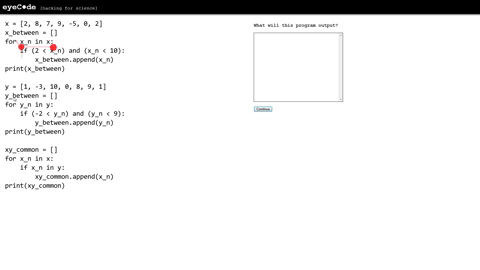

第三章：真正搞定一本教科书¶
1. 学校让大多数人变成了学渣……¶
学会任何东西，最有效率的方法只有一个：
反复通读一本教科书。
其实，从小到大我们都是这么干的。在学校里，在每个学期里，我们所做的事情无非是反复通读几本教科书而已。通读教科书好像没多难，但也挺难的 —— 你看，有老师带着，有同学陪着，中间还有每天的作业以及时不时小测验监督着，结果，竟然绝大多数人并没有彻底掌握那几本教科书的知识……
不知道为什么，学校里的学习过程、练习方法、考核方法都实际在起着反作用，原本是想让人们通过学校里的教育进步的，但最终的结果却是让大多数人变成了学渣。为什么呢？
许多年后，有一个特别坑人思维定势左右者所有人：
好像没有什么东西学过之后是可以打满分的！
这个想法带来的衍生思维定势是这样的：
既然不能满分（甚至哪怕不能优秀），那么学到的东西就是没用的……
可问题在于，这些想法完全是错的！错得离谱。因为，首先，在现实世界里，没有人有能力或者配得上为现实生活设计有效的考试去衡量一个人的方方面面。然而更为重要的是，现实生活的原则本质上是很现实的：
无论什么技能，“够用就行” —— 总比完全不会强！
况且，还有另外一个重要的事实：
只要够用，就能用起来，只要用起来，就只能越做越好…… 没有人从一开始就能做好，都是慢慢练出来的，慢慢积累出来的。
小学六年，高中六年，本科四年，一晃十六年过去，给绝大多数人留下的印迹是，只要没有人带，只要没有人陪，只要没有人逼着做作业，没有人逼着参加考试，就完全不知道怎么学了，虽然心里也知道这明显是不仅自己也能做，其实自己也能做好的事情……
2. 只选一本书肯定是错的……¶
小时候，学习能力差，理解能力不成熟，所以，我们在任何技能上，都是靠“统一的教科书”、“统一的教学方法”、“统一的考核方法”去搞定。另外一个原因是，整个社会也确实没有能力为每个人“定制教科书、教学方法、考核方法”，只能统一。然而，随着年龄的增加，学习经验的丰富，学习能力的积累，二十岁之后我们还用过去的方法，就明显是“失误”。
改进的方法倒也简单：
筛选一本以上的教科书，对比、参照着反复通读。
这看起来好像没有多大的改动，实际上是一种“革命”。于是，那些自学经验丰富的人、已经给自己革过命的人，通常不会跑到各种论坛上发问，也很少请别人给他们推荐“最好的教科书” —— 挑书从来都是应该自己去做的事情；也更因为对他们来说，没有什么教科书是“最好的”，各有各的优势，各有各的缺陷。
筛选 Python “教科书”，排名第一的，当然是 Python 的 官方文档 —— 官方文档永远是首选。而它里面的 Tutorial 当然是通读的首选。没有耐心的人有没有耐心的方法 —— 那就是找一本简短的书。 A Byte of Python 就是很简短的一本书，它也有中译版 简明 Python 教程。还有另外两本书值得选，第一本是因为它的主旨很好，它并不是要关注如何学会 Python 这个特定的编程语言，而是学会编程思维 —— Think Python 2e ，它也有 中译版 第二本是因为它那切合标题的内容： The Self-Taught Programmer: The Definitive Guide to Programming Professionally —— 这本书暂时没有免费版，也没有中译版，买罢！
3. 处理一本教科书的方法¶
注意我的措辞，“处理”一本教科书的方法。我们不把“精通”当作起步时的负担 —— 因为那是长期反复研读之后的境界。我们也无需保证或者强求自己在最快的时间里以最高的效率完成消化或者达成成就。“处理”的意思是说，该做什么就做什么，做完为止。做得好不好并无关系，因为反复做过之后，必然一遍比一遍更好 —— 所有的技能获得，最终都是卖油翁说出来的那条真理：“无他，手熟儿。”
TODO¶
随便
先从读一本小书开始：
https://www.gitbook.com/book/lenkimo/byte-of-python-chinese-edition/details
以后你就知道了，编程语言其实都差不多，都由差不多相同的组成部分 —— 因为程序干的事儿抽象到最后，其实最终都一样：
- 运算
- 判断
- 重复
所以，不管是 C，还是 C++，抑或 Python、Java、Javascript、Go，都一样，最终都是要做运算、判断、重复的…… 你不妨到网上书店里翻翻不同编程语言的教程，看看它们的目录，你会发现的，其实都一样，都有诸如以下的章节：
- 变量和数据类型
- 操作符（或称运算符）
- 条件判断
- 循环
- ……
所以，这些概念并不是哪一种编程语言特有的，所有编程语言都得用，只不过，最终，各个编程语言的语法规则定义略有不同，比如，很多语言用大括号 {} 定义程序块，Python 用一个冒号 : 以及随后语句之前的缩进定义程序块；再比如，有些语言需要明确地使用分号 ; 作为一个语句的结束，Python 却不一定用…… 当然，各个编程语言有各自的特色，各自擅长的领域 —— 所以，绝大多数程序员会不止一种语言；也正因如此，学会一个编程语言之后，再学其它的编程语言就很简单，基本上是一周，甚至一天的事情。
上一段最后一句话的意思是说：
- 学第一个编程语言的时候，可以 刻意 慢一点，反正是越扎实越好 —— 反正以后就越来越简单了……
- 更重要的是，无论什么技能都一样，学会之后就很简单，虽然刚开始的时候有很难很难的错觉……
如何输入？键盘、文件 如何输出？键盘、文件 如何判断？ 如何循环？ 如何遍历数组？
Watch “Eye-Tracking Code Experiment” on youtube
Good Python code to read: